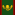

Formable Nations: Reworked
Version 4.3.1 Steam Workshop
Steam Workshop  Github
Github  Patreon
Patreon
Formable Nations: Reworked is a complete rework and overhaul of the highly popular mod Basic Mods: Formable Nations. With a team of dedicated developers and absolutely no lives we've recreated the mod into a functional, error-free, bug-squashed experience for all to play
Here you can find a list of nations that are available to you as a player, and the AI as well. They all have unique flags created by various talented artists online. By clicking a nation on this page you will be taken to a unique page for that nation which will contain information about the nation such as history, and how to form the nation similar to the eu4wiki if you were to google a nation when trying to form it allowing for all-in-one convenience of what you may be after!
Featured Countries:
New Formable Nations
{kind=link}
Europe
 Adriatic Empire
Adriatic Empire
 Alsace-Lorraine
Alsace-Lorraine
Alpland
Angevin Empire
Anglo-Dutch Union
 Austrian Empire
Austrian Empire
Austria-Bavaria
 Austro-Hungarian Empire
Austro-Hungarian Empire
Aquitaine
Balkan League
 Baltic Union
Baltic Union
Basque Country
Belarus
 Belgium
Belgium
Benelux
 Bosnia-Serbia
Bosnia-Serbia
 Bremen-Verden
Bremen-Verden
Bulgarian Empire
British Empire
Carolingian Empire
Catholica Russica
Celtic Union
Cisalpina
Cordoba
Commonwealth of England
Czechoslovakia
 Dacia
Dacia
Ducal Prussia
Dual Monarchy
Donetsk People's Republic
East Prussia
East Slavia
Eastern Roman Empire
 Emilia-Romagna
Emilia-Romagna
 European Union
European Union
Franco-Iberian Empire
 Franconia
Franconia
French Empire
Frieslande
Gallic Empire
 German Empire
German Empire
German Reich
Greater German Reich
Hanseatic League
Hesse-Nassau
Hungarian Empire
Iberian Empire
Italian Empire
Italian Merchant Alliance
 Jagiellonian Empire
Jagiellonian Empire
Kalmar Union
Kievan Rus
Kingdom of Germany
Kingdom of God
Langobards
Latin Empire
Lombardy
Lombardy-Venetia
Lower Saxony
Luhansk People's Republic
Lusitanian Empire
 Macedon
Macedon
Macedonian Empire
Malta
Mercia
Nazi Germany
North German Confederation
North Sea Empire
Occitania
Ostrogoths
 Pontus
Pontus
Roman Republic
 Rhine Confederation
Rhine Confederation
Russian Empire
Russian Federation
Russian Republic
 Rugii
Rugii
Serbian Empire
 Siebenbuergen
Siebenbuergen
South German Federation
 Soviet Union
Soviet Union
 Sweden-Norway
Sweden-Norway
Swedish Empire
Terraconensis
Third Rome
 Turkey
Turkey
Ukraine
 United Kingdom
United Kingdom
 Visigoths
Visigoths
Wendish Empire
Western Roman Empire
 Yugoslavia
Yugoslavia
Asia
Armenian Empire
 Arabian Empire
Arabian Empire
 Caucasia
Caucasia
County of Edessa
County of Tripoli
Empire of China
Goguryeo
Himalayan Empire
Imperial Japan
Islamic Emirate of Afghanistan
Islamic State
Makhnovia
 Mingrelia
Mingrelia
North Korea
Omani Empire
Palmyrene Empire
 People's Republic of China
People's Republic of China
Philippines
Puntland
Principality of Antioch
Republic of Armenia
Republic of China
Saudi Arabia
South Korea
Srivijaya
Sulawesi
 Scythians
Scythians
 Tatarstan
Tatarstan
Taiping
Taliban
Tengoku
 The Horde
Tibetan Empire
Turan
Urals
United Arab Republic
 Vietnam
Vietnam
India
 Burma
Burma
 Chola
Chola
Ceylon
Durrani Empire
Hoysala Empire
Pallava
Rashtrakuta
Sur Empire
Africa
Abyssinia
Almoravids
Almohod Caliphate
 Carthage
Carthage
Central African Empire
Chad
Empire of Mali
Kanem-Bornu Empire
Kenya
Madagascar
Maghrebia
Manchuria
Majapahit Empire
Nigeria
Numidia
Rhodesia
South Africa
Ummayad Caliphate
North America
Confederate States
Chicago
Illinois
Muskogee
South America
Oceania
Abode of Peace
Greater Wiradjuri
Pitjantjatjara
Tasmania
Tonga Empire
Reworked Vanilla Formable Nations
These are nations that are in unmodded vanilla Europa Universalis IV that have been changed to follow the template/upgraded layout that the mod provides to the new nations to allow better functionality and quality of content.
Europe
Andalusia
Armenia
Bavaria
Croatia
Great Britain
Greece
Hanover
Holy Roman Empire
Iceland
Ireland
Italy
Kingdom of Germany
Kurland
Netherlands
Ostrogoths
Prussia
Romania
Roman Empire
Rûm
Russia
Ruthenia
Sardinia-Piedmont
Scandinavia
Spain
Visigoths
Asia
Bharat
Bhutan
Bukhara
Deccan Empire
Delhi
Egypt
Hindustan
Ilkhanate
Japan
Korea
Nagpur
Nepal
Malaya
Manchu
Marathas
Mongol Empire
Mughals
Persia
Punjab
Shan
Tibet
Qing
Africa
Algiers
Empire of Mali
Sokoto
Jerusalem
Tunis
North America
California
Maya
Inca
Oceania
Australia
South America
Brazil
Chile
Colombia
Changelog
All changes will be tracked here, but are less updated than on or Discord.
View Changelog
-Fixed Arabian Empire issue
-Fixed Deccan issues
-Fixed Tunis issues
-Fixed Puntland Issues
-Fixed Austria issues
-Fixed Delhi issues
-Fixed Westphalia issues
-Fixed Italian issue
-Fixed Greece issue
-Fixed Hausa issue
-Fixed European Union issue
-Fixed Celtic Union issue
-Fixed Ruthenia issue
-Fixed Yuan issue
-Fixed Westfalen issue
-Fixed Two Sicilies issue
-Fixed Spanish Empire issue
-Fixed Texas issue
-Fixed Orissa issue
-Fixed Tatarstan issue
-Fixed Brazil issue
-Fixed Bhutan issue
-Fixed Historical Mode issue
-Fixed Latin Empire issue
-Fixed Byzantium issue
-Fixed Dalmatian issue
-Fixed Islamic State issue
-Fixed Great Britain issue
-Fixed Roman Republic issue
-Fixed Papal State Government Reform issue
-Fixed Kingdom of God localisation issue
-Fixed misssing Qing Celestial Empire reform
-Fixed missing The Horde flag
-Fixed missing TAGs for some formables
-Fixed missing National Ability localisation
-Fixed and improved Mongol Empire decision -Fixed Axumite issues
-Fixed Almoravid issues
-Fixed Bukhara issues
-Fixed LOTS of various unlisted issues that I forgot to track while editing
-Changed Arabian Kingdom to Arabian Kingdom of Syria
-Added Unique Decisions to Latin Empire and all historical crusader nations allowing you to restore the Crusader States
-Added County of Edessa
-Added Principality of Antioch
-Added County of Tripoli
-Added Ukraine
-Added Unique Content for Ukraine
-Added Donetsk People's Republic
-Added Luhansk People's Republic
-Added Western Roman Empire
-Added Ukranian Culture
-Added Rhodesia Unique Ideas (Courtesy of InternationalHistorian)
-Added Startup Formable Nations setting
-Eastern Roman Empire improvements
-Kurland improvements
-Taiping improvements
-Roman Republic improvments
-Spanish Empire improvements
-Syrian Kingdom of Arabia improvements
-Ethiopia and Abyssinia can no longer form Puntland
-Removed Taiping Heavenly Kingdom [You will instead have unique decision for Taiping to declare the Heavenly Kingdom]
-Removed Islamic Emirate of Afganistan [You will isntead have unique decision for Taliban to declare Islamic Emirate of Afghanistan]
-Removed Great Britain General Formation
-Our Place in the Empire improved, you will now be notified when a country leaves the Empire
-Crusader States already added, but improved just now with correct reforms
4.1.0
-Major compatability overhaul [Will now be compatible with other formable mods]
-Major update containing multiple commits [4.0.30, 4.0.31, 4.0.32, 4.0.33, 4.0.34, 4.0.35, and 4.0.36]
-Massive localisation overhaul to prevent localisation issues
-Changed idea description update to 4.2.0, this is time consuming but will be done soon and has been pushed back for bug fixes
-Fixed various issues such as westfalian nation being unformable due to typo
-Fixed over 800+ localisation issues
-Fixed random ship names and leader names issues
-Github folders will no longer be included in the download, this decreases the download size significantly. [53.4MB less to download]
4.0.36
-Bug Fixes
4.0.35
-Bug Fixes
4.0.34
-Italian Empire improvements
-Saluzzo can now form Sardinia-Piedmont
-Added Latin Empire
-Added Missing Dalmatia formable
-Improved Dalmatia
4.0.33
-Tuscan and Italian nations will not show if you are a republic, instead of being hidden from view
-Fixed Omani Empire formation issue
4.0.32
-European Union Improvements
-Omani Empire fixes
4.0.31
-Japan can now be formed by Japanese Culture nations that are not Daimyo or Shogun
-Japan Improvements
-Added Omani Empire
-Fixed Islamic Emirate of Afghanistan not included but should be
-Fixed Russian Tsardom Issues
-Fixed Russian Empire Issues
-Added monthly_militarized_society Debuff to German Empire custom government
-Fixed tengoku issue
-Fixed Mexico & USCA issues
-Various bugfixes and localisation fixes
4.0.30
-Fixed Canada Issues
-Fixed Quebec Issues
-Fixed German Empire Event issue
-Changed Canada flag to Modern flag
4.0.29
-Added the Langobards and seperated Lombardy and Langobards into two different decisions
-German Empire Fixes
-German Empire Improved
-German Empire +3 New Custom Events
-Baltic Union Improved
-Our Place in the Empire Event Improved
-Various bugfixes
4.0.28
-Fixed Startup Historical Settings date issue
-Fixed Mexico being able to form Iberian nations
-Fixed Anarcho-Communist Government bug
-Fixed Prussian Monarchy localisation issue
-Fixed Extra Spacing Issues
-Fixed Various government reform tooltip issues
-Fixed missing shimabara event localisation
-Fixed Great Britain formation issue
-Fixed Mongol Empire issues
-Fixed Yuan Issues
-Improved German Empire decision
-Improved Brandenburg-Prussia decision
-Improved Prussia decision
-Improved Dual Monarchy decision
-Improved European Union decision
-Improved Great Britain decision
-Improved Mongol Empire decision
-Improved Flee to Brazil decision
-Added the Langobards and seperated Lombardy and Langobards into two different decisions
-Removed Prussian_Nation_Brandenburg for Prussian_Nation_Brandenburg_Prussia to correct prussia formation line
-Removed Carpathian culture group from Romanian decision
-Changed United Kingdom of Bosnia-Serbia Name to Bosnia-Serbia; it will have a unique government soon to replace this.
-Prussia decisions fixes
-Prussia decisions Improvements
-German Empire decision Improvements
-United Kingdom Ideas Adjusted
-Brandenburg-Prussia Ideas Adjusted
-Serbian Empire Ideas Adjusted
-Serbian Empire Idea localisation fixes
4.0.27
-Updated and Improved Prussian formations
-Updated Brandenburg-Prussia flag
-Fixed Maknovia formation bug
-Fixed Lombardy decision
-Improved flee to brazil decision
-various other fixes
4.0.26
-Fixed Startup Historical Setting issue
-Fixed Makhnovia Government Issue
-Fixed Makhnovia Ruler Issue
-various other fixes
4.0.25
-Almoravid added
-Shimabura Rebellion now functional
-Tengoku Revolt now functional
-various events and decisions improved
-Changed Carolingian Empire Colour
-Added Historical Mode decision
-Iberian Union AI Importance reduced from 400 to 300
-North Africa formables changed from 10 to 15 tech req
4.0.24
-Carolingian Empire added
-Scythians Added
-Somalia Added
-Chad Added
-Ghana Empire Added
-Hawaii Added
-Isreal Added
-Aksumite Added
-Kenya Added
-Rhodesia Added
-Kanem Bornu Empire Added
-Puntland Added
-Makhnovia Added
-Egypt Updated with unique Mamluks decision
-Turan and Catholica Russica fixed
-PRC Reforms fixed
-Tengoku Disaster Improved and now functional
-Romania no longer too limited in formation reqs
-Kingdom of God / Gods Kingdom Fixed and Improved
-Wendish Empire no longer can be formed by Germanic culture
-New Custom Government [Type Stateless Society] for special countries
-New Custom Reform [Anarcho-Communist] for special countries
-Kalmar Union Flag Fixed
-Armenian Empire Flag Fixed
-Compatibility improvements
-monarch_names fixes
-Lots of Bugfixes
-Lots of changes I forgot to log
-Added github changes file
Compatibility
Basic Mods: Formable Nations is not compatible with mods that edit provinces or province IDs (like Extended Timeline does) BUT will soon include an Extended Timeline Version - though that itself will also be a major project as a small team so it will come; but not right this moment.
Images
Lots of cool images and screenshots of nations that have either formed naturally or through console for developer purposes.
No Images Added
Downloads
Current Version: 4.1.7
Previous Versions:
Development Team
Lead Developer | Lead Programmer | Tester
Lotus
Minor Development | Tester | Ideas
Aaronthelemon
Minor Development | Tester | Ideas
VSPV
Tester | Ideas